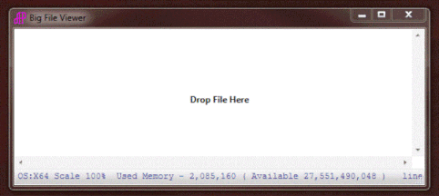
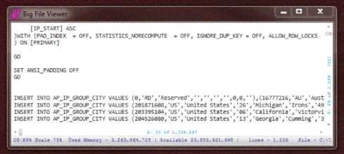

Updated - swithch F# to version 4.0.
Lager Text File Viewer - Big Huge file viewer - Some gigabytes file is not a problem - opennign during some seconds.
It is a real application which allows to re-view big file.
This not a sample, it is a fully working application for view big/huge size file.
Bring Application and goto …\BigFileViewerModule\BigFileViewer\bin and RUN BigFileViewer.exe
Or bring, compile and RUN
It works with any size of the file(s).
It was tested with the 0.3G, 1G, 4G, 8G and 16G files.
See GIF file for performance – example for opening 1G file (each line in this file about 1M)
One restriction – each line must be less than 4M (or you need to use PRO version which will be published in Microsoft Store)
It will be working on any PC with dot.Net 7.0
(It successfully work on ten years old PC with few gigabytes of memory)
See gif-file - an example of the 1G file ...

Any file will be ready to view during 5..15 sec.
Some seconds need to spend on MAP file – progress bar will show staus (it is background process - 8G file MAPED during 40 sec (it depends on your hardware)
Application using “Memory Mapped File” – you can see detail example here https://code.msdn.microsoft.com/windowsapps/Big-Huge-file-viewer-It-is-55bc7227/https://code.msdn.microsoft.com/windowsapps/Big-Huge-file-viewer-It-is-55bc7227/https://code.msdn.microsoft.com/windowsapps/Big-Huge-file-viewer-It-is-55bc7227/https://code.msdn.microsoft.com/windowsapps/Big-huge-file-viewer-62a903f2

For “Open” file just drop it on Application (NOT ADMIN mode) or use mouse right click – Open.
Description
For “Open” file just drop it on Application (NOT ADMIN mode) or use mouse right click – Open.
Mouse Right Click - Menu (Open file/Find/GoTo/Exit)
“GoTo” – just Number (GoTo line)
Comma + Number (GoTo char position)
Number + Comma + Number (Go To specific X,Y position)
For adjust size of application use [Ctrl] + Mouse Wheel - for scaling this application (75%...200%)
[Double Click] on SlideBar X or Y - jump to new position (use for fast moving to new position)
[Shift] + mouse wheel – horizontal scrolling
[Shift] + [Tab] Shift left on 4 position
[Shift] + [PageUp] Scroll Y scroll Up 100 pages
[Shift] + [PageDown] Scroll Y scroll Down 100 pages
[Ctrl] + Mouse Wheel application scale 75%...200%.
[Ctrl] + [Home] to X=0, Y=0
[Ctrl] + [End] to X=0, Y=Last line
[Ctrl] + [PageUp] Scroll Y scroll Up 10 pages
[Ctrl] + [PageDown] Scroll Y scroll Down 10 pages
[Ctrl] + [O] Open Menu
[Ctrl] + [F] Find Next
[Esc] Escape form Search (also double click on X/Y Scroll bars)
[PageUp] page up
[PageDown] page down
[Home] X = 0
[End] X max chars in line (it is not End to particular line)
[Left] left on one position
[Right] right one position
[Up] up to one line
[Down] down to one line
[Tab] shift right on 4 position
Also use Mouse Wheel on text area – scroll down/up
Iif hold [shift] + Mouse Wheel - scroll left/right
module MainWindow open System open System.Windows open System.IO open System.Windows.Markup open System.Windows.Controls open System.Reflection open System.Windows.Media.Imaging // init Main Window let mutable this : Window = new Window() do this.ResizeMode <- ResizeMode.CanResizeWithGrip do this.SizeToContent <-SizeToContent.WidthAndHeight do this.Title <- "Big File Viewer" do this.MinHeight <- 256.0 do this.MinWidth <- 512.0 do this.MaxHeight <- 2160.0 // limit lines per screen 200 lines do this.MaxWidth <- 3000.0 do this.SizeToContent <- SizeToContent.WidthAndHeight let iconUri = new Uri("pack://application:,,,/AP.ico", UriKind.RelativeOrAbsolute); do this.Icon <- BitmapFrame.Create(iconUri) do this.Name <- "MainWindow" let mutable ucMainWindow = new MyUserControl.BigFileViewer() do this.Content <- ucMainWindow do this.Loaded.Add(fun _ -> ucMainWindow.WinHolder <- this) do this.Unloaded.Add(fun _ -> this <- null GC.Collect()) //Environment.Exit(0) do this.SizeChanged.Add(fun _ -> ucMainWindow.WinHolder <- this) [<STAThread>] [<EntryPoint>] do (new Application()).Run(this) |> ignore
module MainWindow open System open System.Windows open System.IO open System.Windows.Markup open System.Windows.Controls open System.Reflection open System.Windows.Media.Imaging // init Main Window let mutable this : Window = new Window() do this.ResizeMode <- ResizeMode.CanResizeWithGrip do this.SizeToContent <-SizeToContent.WidthAndHeight do this.Title <- "Big File Viewer" do this.MinHeight <- 256.0 do this.MinWidth <- 512.0 do this.MaxHeight <- 2160.0 // limit lines per screen 200 lines do this.MaxWidth <- 3000.0 do this.SizeToContent <- SizeToContent.WidthAndHeight let iconUri = new Uri("pack://application:,,,/AP.ico", UriKind.RelativeOrAbsolute); do this.Icon <- BitmapFrame.Create(iconUri) do this.Name <- "MainWindow" let mutable ucMainWindow = new MyUserControl.BigFileViewer() do this.Content <- ucMainWindow do this.Loaded.Add(fun _ -> ucMainWindow.WinHolder <- this) do this.Unloaded.Add(fun _ -> this <- null GC.Collect()) //Environment.Exit(0) do this.SizeChanged.Add(fun _ -> ucMainWindow.WinHolder <- this) [<STAThread>] [<EntryPoint>] do (new Application()).Run(this) |> ignore